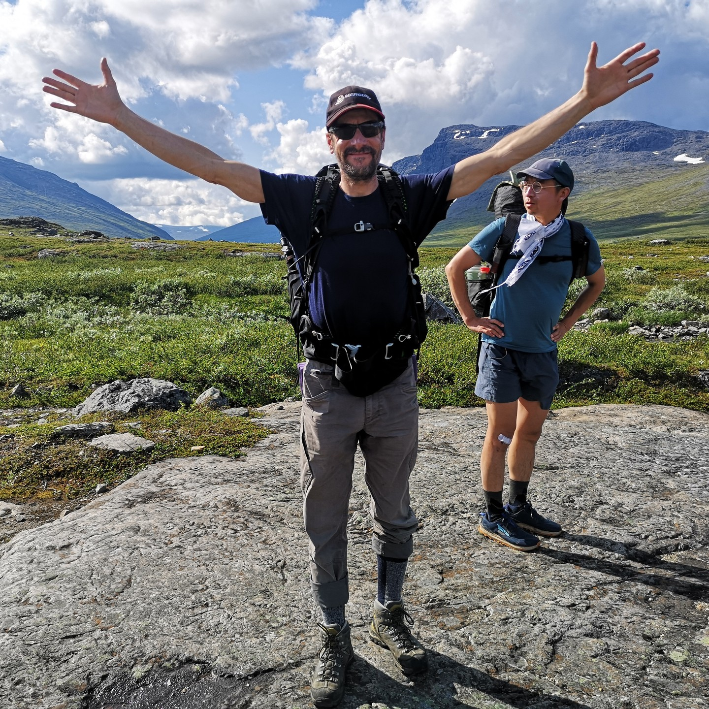
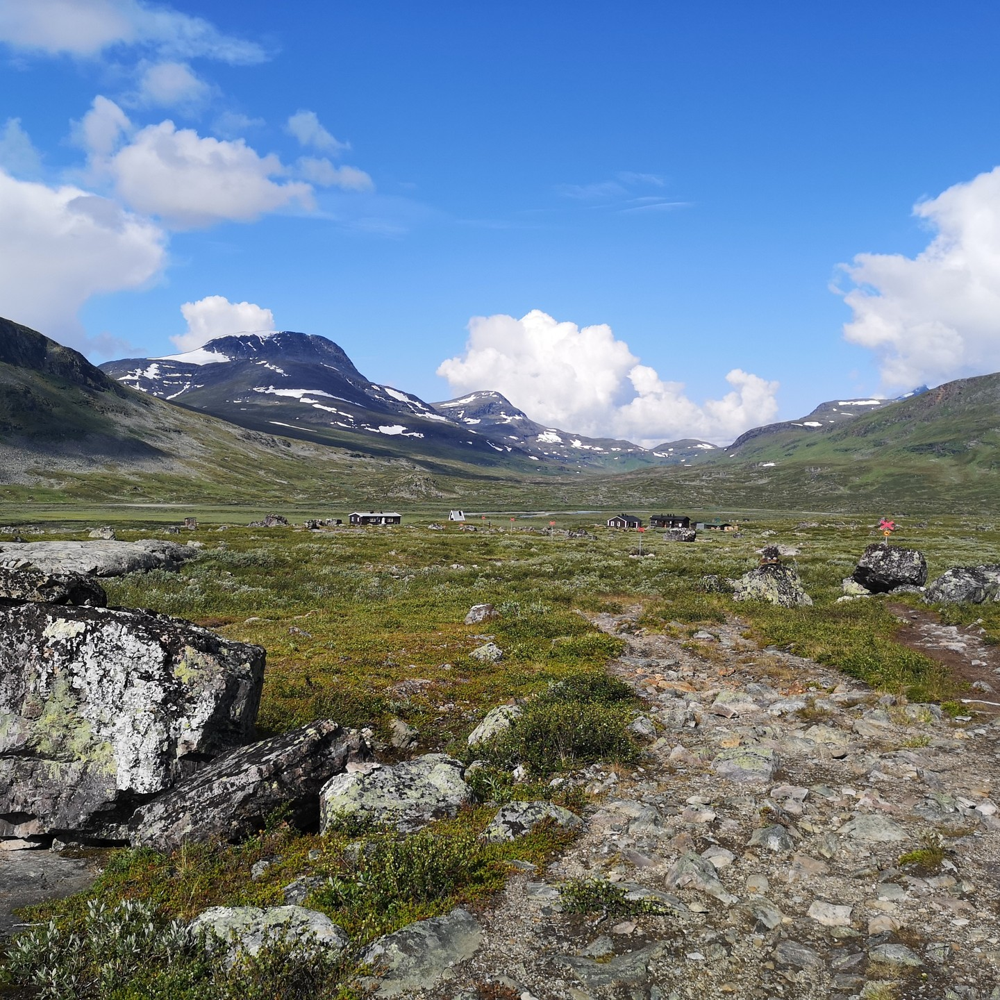
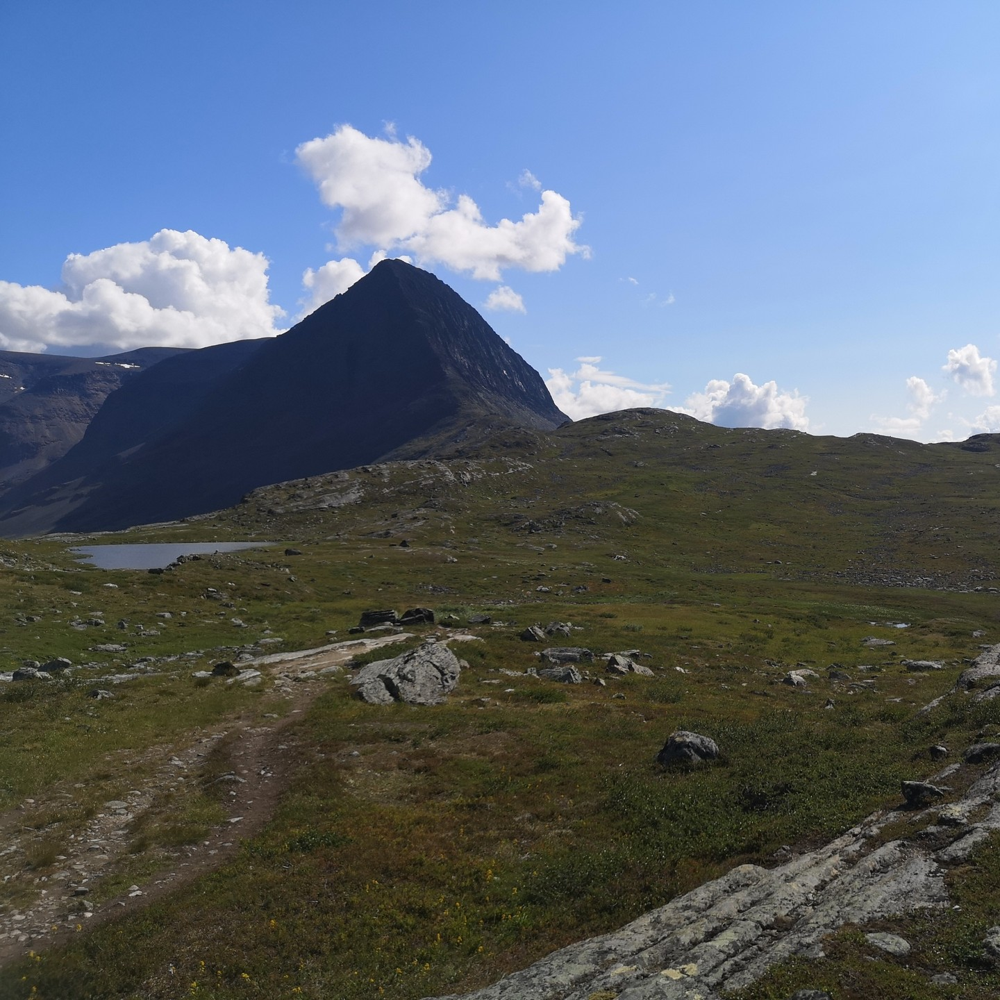
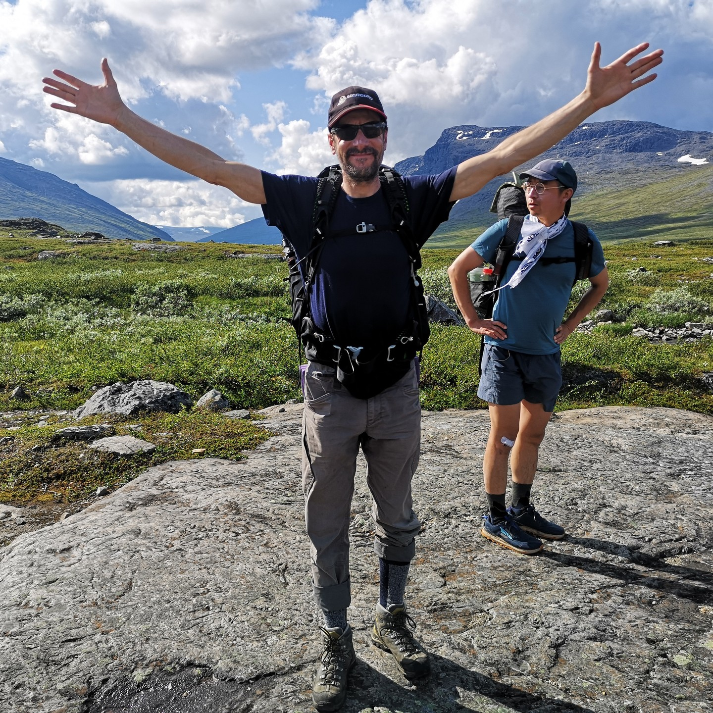
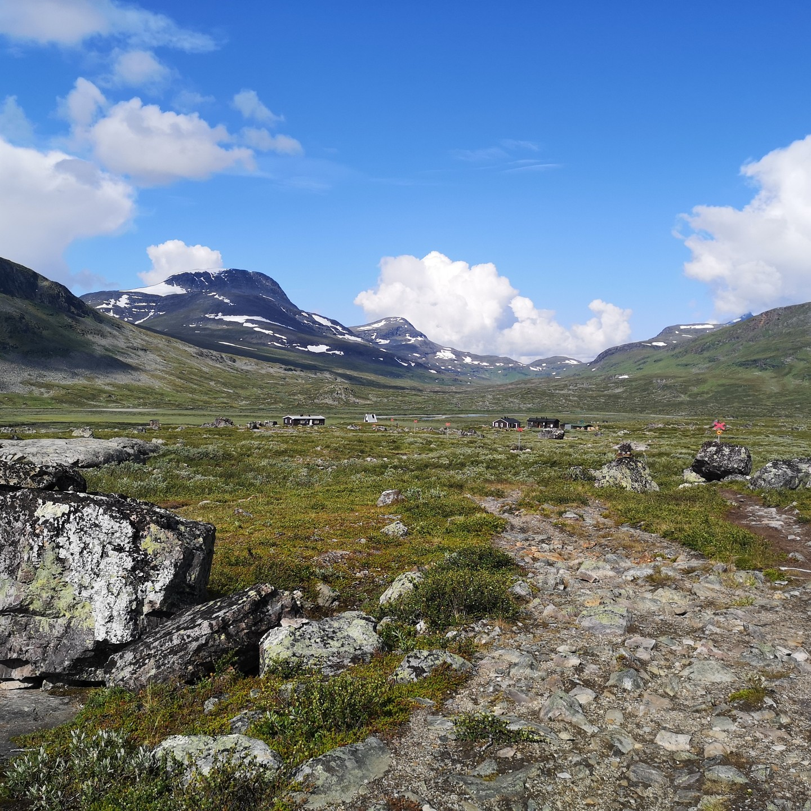
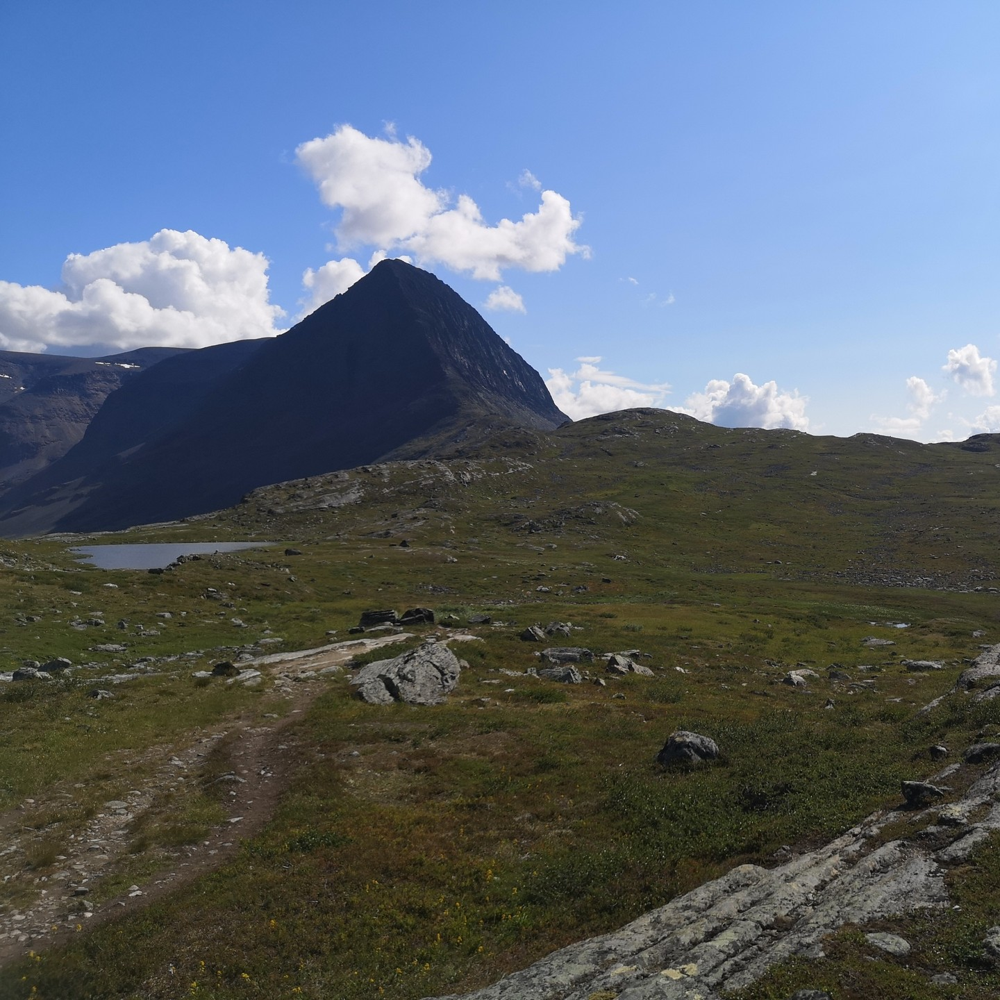
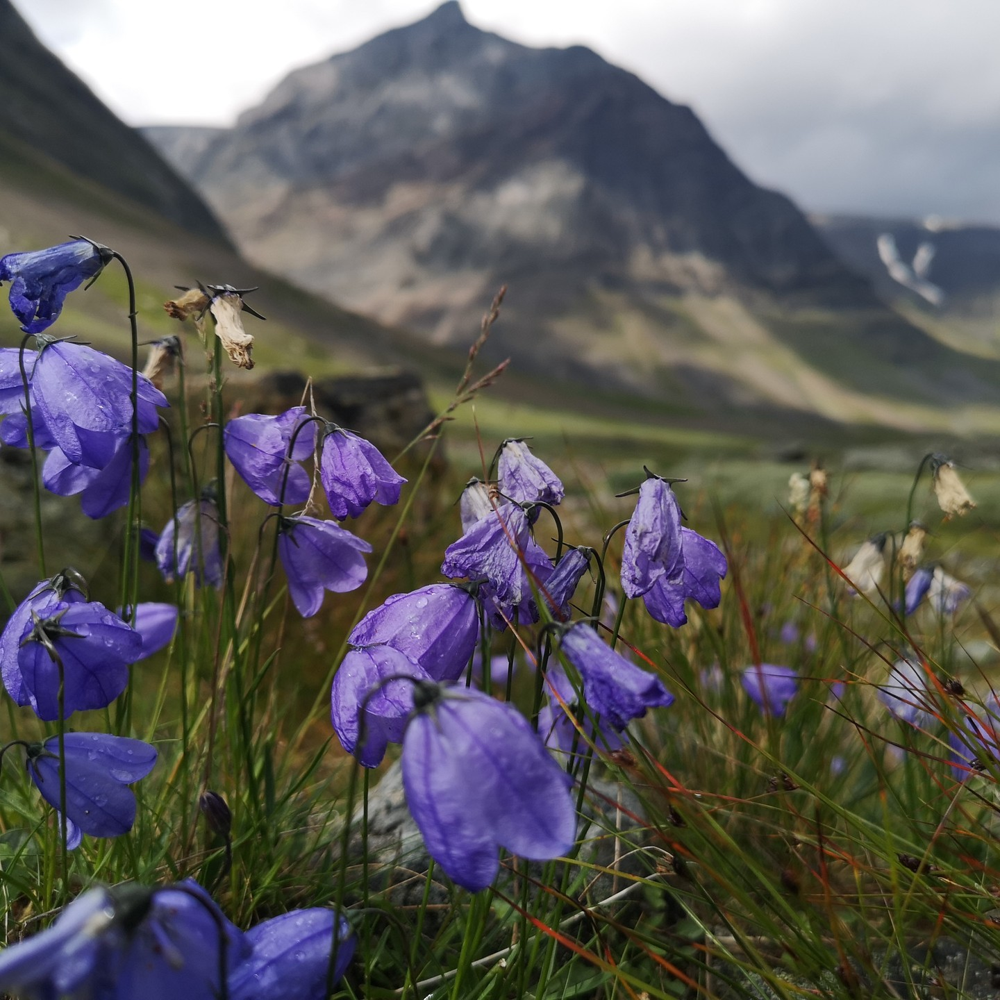
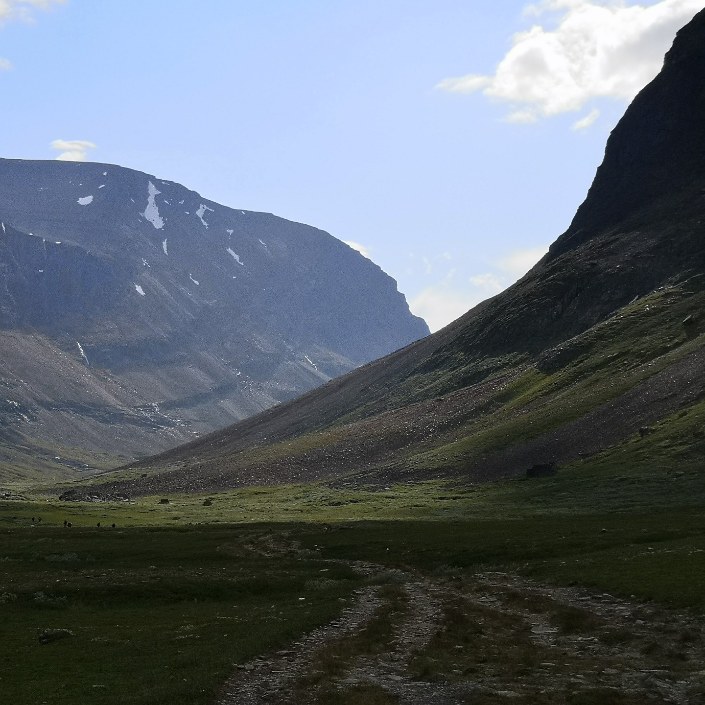
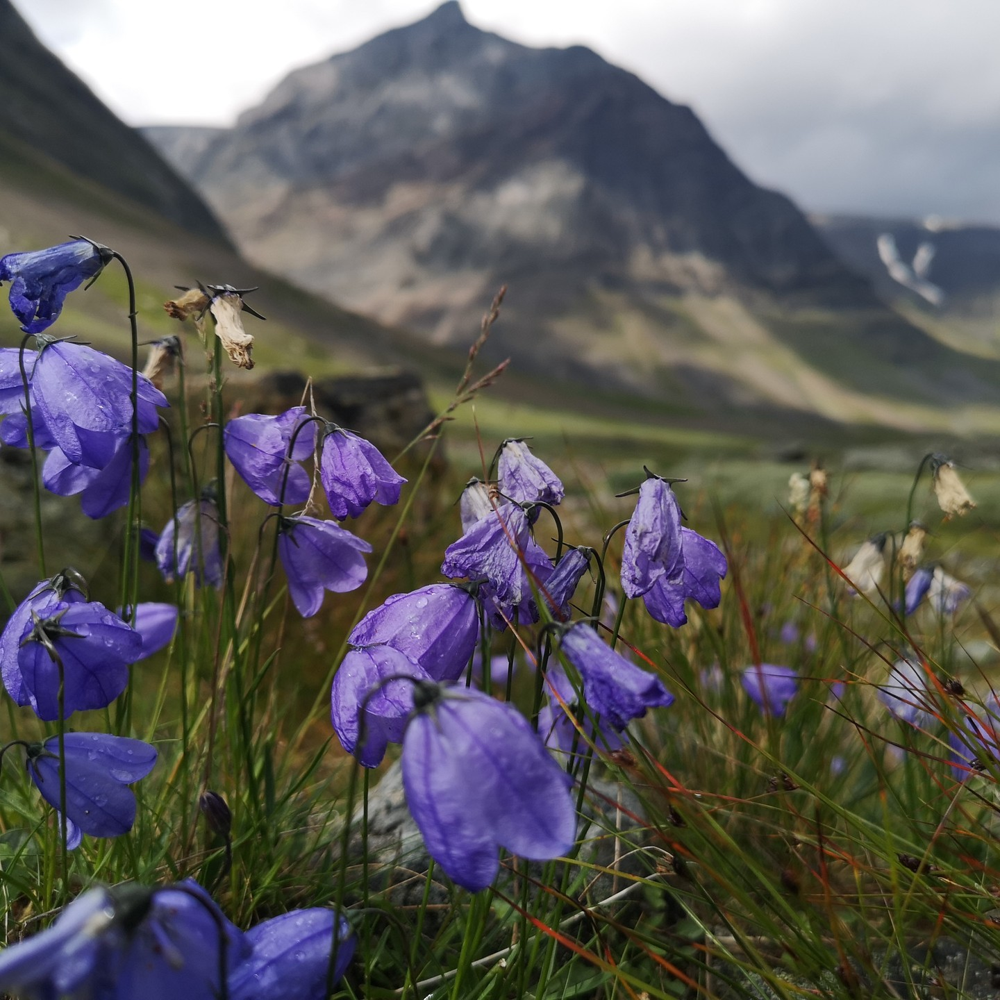
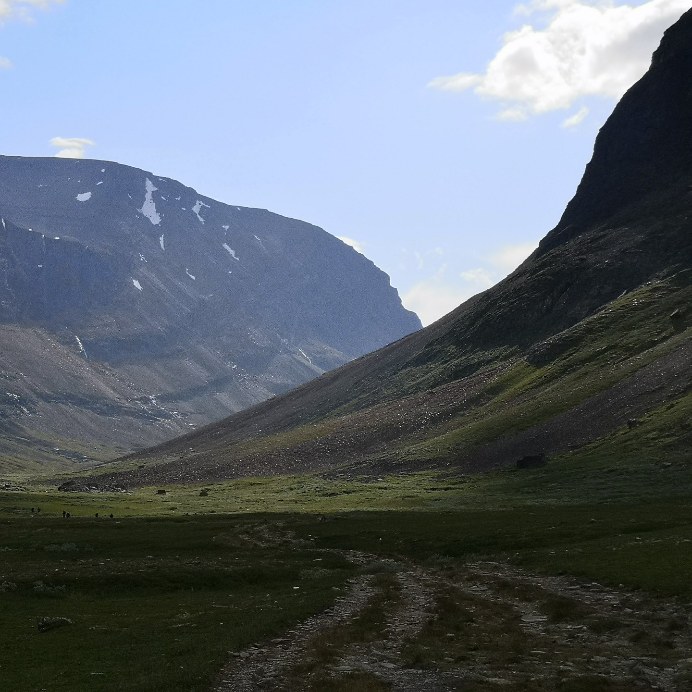

Day 5 of 6 in Swedish Lapland. We only walked on the famous Kungsleden (king's road) for ~8km on...
Day 5 of 6 in Swedish Lapland. We only walked on the famous Kungsleden (king's road) for ~8km on day 4, but the day 5 and 6 hikes were very similar to that type of more flat hiking on well trodden paths. The scenery is no less varied and beautiful though, but doesn't feel as remote and wild anymore, with a lot more green. On this day we followed a rainbow, which seemed to push the expected rain away from us. More magic.
 





 


